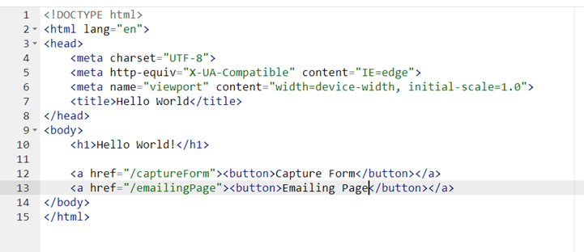

Render Template and Basic HTML
Cool, we are now ready to move on to the next part of flask, and that is to serve HTML pages. Weren’t we serving them already you might ask? Yes and no, we have been serving text on a pre-made HTML page, but we haven’t used the markup language to structure it. For us to serve HTML files, we need to do 2 things. First, we need to import the “render_template” function from flask.
# A very simple Flask Hello World app for you to get started with...
from flask import Flask #imports the Flask function from flask
from flask import render_template #imports the render_template function from Flask
Then, in the folder where they have the flask_app.py, we need to create another folder called “templates”, this can be done by typing in “templates” into the text box and pressing “New directory”.
You will then be placed inside the templates folder, in it go to the text box on the right hand side of the screen and type in “index.html” and press “new file”.
Then, within the file type in the markup of the page or just copy mine (Copy mine if you don’t know HTML):
Now, go back to the flask_app.py file and within the function that runs on the default route, type in “return render_template(“index.html”)” instead of the return section:
# A very simple Flask Hello World app for you to get started with...
from flask import Flask #imports the Flask function from flask
ender_template function from Flask
app = Flask(__name__) #Creates the flask app called app
@app.route('/') #Defines the route at the default route
def serve_indexPage(): #Function that will run at the default route
return render_template("index.html")
@app.route('/captureForm') #Defines the captureForm route
def serve_captureForm(): #Function that will run at the /captureForm route
return "Hello I am the capture form page!" #Returns a message
Now, restart the web app. After restarting, if you go back to the default route of your web app, you will see that an HTML page is now served instead of the old message:
Congratulations, you successfully have served a static HTML page using python Flask! Don’t forget to add some comments)))).
Now, go back into the index.html file, we are going to be adding buttons with hyperlinks! Under the <h1>Hello World!<h1> add 2 of the following tags:

As you might have noticed, the href=”” has our route name in it. The <a> tag is hyperlink tag which has a link in it, by providing the href=”/captureForm”, we tell the <a> tag to send us to the /captureForm route on the website. The other <a> tag has a route that we have not yet defined, we will go back to that later. (Note that a <button> tag is put inside the <a> tag, this will create a button outline on the page instead of a nor mal blue text hyperlink”. Now, restart the web app in the flask_app.py file.
You may now notice that we have 2 buttons at the bottom of the “Hello World!” title. If you press the Capture Form one, you will be redirected to the captureForm page, where you will see the message that we have defined for the /captureForm route. But, if you click the other button, you will get a “Not Found” error, this means that a route does not exist.
Okay, with this sorted, lets now create a new HTML page for out captureForm route. Once again, in the templates folder, follow the same process as outlined above to create a new file, and call it “captureForm.html”. Then, type in the following HTML code:
In the HTML file, we are creating a form, in which we have 3 text fields that prompt the user to type in the data. We will go back to the form method and the input attributes later, for now save and go back to the flask_app.py and change the return statement in the serve_captureForm function to render_template(“captureForm.html”). Also, change the name of the function at the default route to “serve_indexPage” and add comments.
# A very simple Flask Hello World app for you to get started with...
from flask import Flask #imports the Flask function from flask
from flask import render_template #imports the render_template function from Flask
app = Flask(__name__) #Creates the flask app called app
# ROUTES
@app.route('/') #Defines the route at the default route
def serve_indexPage(): #Function that will run at the default route
return render_template("index.html") #Renders an index.html file on the default route
@app.route('/captureForm') #Defines the captureForm route
def serve_captureForm(): #Function that will run at the /captureForm route
return render_template("captureForm.html") #Renders the captureForm.html file at the this route
Reload and then click the Capture Form button, you should get the following: